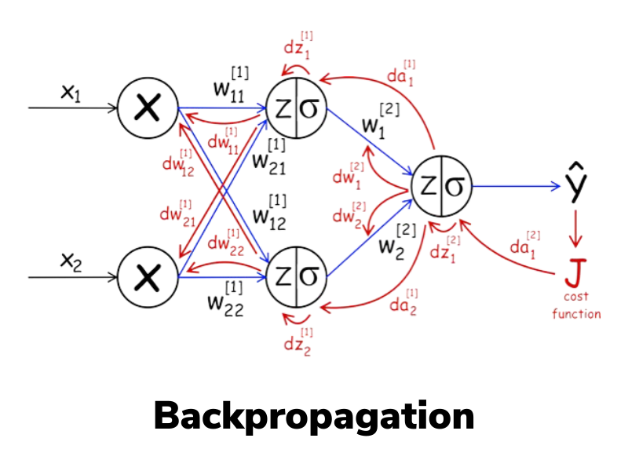

Backpropagation¶
Introdução¶

Sabemos que redes neurais são como calculadoras especializadas que podem resolver problemas complexos. Mas uma pergunta ficou no ar: como elas aprendem? Como uma rede neural descobre quais pesos usar para acertar as respostas?
Pense em ensinar um amigo a cobrar pênaltis. Não adianta dizer apenas “chute melhor”, isso é vago demais. É preciso dar instruções precisas, como: “mire um pouco mais para a esquerda”, “reduza a força do chute” ou “ajuste o ângulo do pé”.
O backpropagation faz exatamente isso, mas para redes neurais: é um método sistemático para indicar a cada neurônio o quanto e em que direção ajustar seus parâmetros, a fim de melhorar o resultado final.
Este algoritmo revolucionou a inteligência artificial e é a base de praticamente tudo que vemos hoje em IA, desde reconhecimento de voz até carros autônomos!
O problema do aprendizado¶
Encontrar os pesos para um perceptron é fácil porque há apenas um neurônio. Mas em uma rede com várias camadas, surge um problema: como saber qual neurônio da camada oculta é responsável pelo erro?
É como tentar descobrir qual jogador de um time de futebol errou quando o time perde — pode ter sido o goleiro, o zagueiro, o meio-campo ou o atacante. Todos contribuíram para o resultado final!
Por que o algoritmo de aprendizado do Perceptron não funciona diretamente em redes multicamadas?
O Backpropagation¶
A solução é propagar o erro de volta através da rede, camada por camada. É como rastrear a origem de um problema:
- Calcule o erro na saída (o quanto erramos)
- Distribua a "culpa" para a última camada oculta
- Continue distribuindo para as camadas anteriores
- Ajuste os pesos baseado na "responsabilidade" de cada um
É como investigar um acidente: você começa pelo resultado e vai voltando para descobrir todas as causas que contribuíram.
Intuição Matemática¶
Função de Perda (Loss) e Entropia Cruzada Binária (BCE)¶
Em redes neurais, o treinamento envolve ajustar os parâmetros (pesos e biases) para que o modelo produza saídas o mais próximas possível das saídas desejadas. Para guiar esse ajuste, precisamos de uma métrica quantitativa que capture o quanto o modelo está errando. Essa métrica é a função de perda (ou função de custo, loss function), que mede a discrepância entre as predições do modelo (\hat{y}) e os rótulos verdadeiros (y).
Suponha uma tarefa de regressão linear, onde queremos prever um valor contínuo. Uma função de perda comum é o erro quadrático médio (Mean Squared Error, MSE):
-
Para um único exemplo i:
$$ \ell(\hat{y}^{(i)}, y^{(i)}) = \left( y^{(i)} - \hat{y}^{(i)} \right)^2 $$ -
Para um lote (batch) de m exemplos:
$$ J = \frac{1}{m} \sum_{i=1}^{m} \ell\left( \hat{y}^{(i)}, y^{(i)} \right) = \frac{1}{m} \sum_{i=1}^{m} \left( y^{(i)} - \hat{y}^{(i)} \right)^2 $$
Aqui, o quadrado garante que erros positivos e negativos não se cancelem, e penaliza erros maiores de forma quadrática (ou seja, um erro de 2 é penalizado 4 vezes mais que um erro de 1, incentivando o modelo a evitar grandes desvios).
Requisitos para uma Boa Função de Perda
A função de perda deve ser diferenciável (quase em todos os pontos) para permitir o cálculo de gradientes via backpropagation. Além disso, ela deve ser convexa ou quasi-convexa em problemas ideais, facilitando a convergência para um mínimo global. O objetivo do treinamento é minimizar J ajustando os pesos \theta do modelo:
$$
\theta^* = \arg\min_{\theta} J(\theta)
$$
Usamos otimização baseada em gradientes para isso, como o Gradiente Descendente.
Agora, foquemos em tarefas de classificação binária, onde y \in \{0, 1\} (ex.: "é spam ou não?"). Aqui, a saída do modelo é tipicamente uma probabilidade \hat{y} = \sigma(z) \in (0,1), onde \sigma é a função Sigmoid aplicada ao logit z (saída linear antes da ativação). A função de perda tipica é a Entropia Cruzada Binária (Binary Cross-Entropy, BCE) ou log loss:
-
Interpretação Probabilística: A BCE deriva do negativo do logaritmo da verossimilhança (negative log-likelihood) sob uma distribuição de Bernoulli. Se y=1, a perda penaliza quando \hat{y} está longe de 1 (ou seja, \log(\hat{y}) é muito negativo se \hat{y} for pequeno). Se y=0, penaliza quando \hat{y} está longe de 0. Isso incentiva predições "confiantes" apenas quando corretas; predições erradas e confiantes (ex.: \hat{y}=0.99 quando y=0) recebem penalidades altas devido ao logaritmo.
-
Derivação Rápida do Gradiente: Uma propriedade chave da BCE combinada com Sigmoid é a simplificação do gradiente. Vamos derivar brevemente:
A perda em termos do logit z é \ell(y, \sigma(z)) = -[y \log(\sigma(z)) + (1-y) \log(1 - \sigma(z))].
Usando a regra da cadeia:
$$ \frac{\partial \ell}{\partial z} = \frac{\partial \ell}{\partial \hat{y}} \cdot \frac{\partial \hat{y}}{\partial z} = \left( \frac{\hat{y} - y}{\hat{y}(1 - \hat{y})} \right) \cdot \hat{y}(1 - \hat{y}) = \hat{y} - y $$ Essa simplificação torna o backpropagation computacionalmente eficiente e numericamente estável, evitando problemas como vanishing gradients em camadas profundas.
Para um batch:
$$
J_{\text{BCE}} = \frac{1}{m} \sum_{i=1}^{m} \ell_{\text{BCE}}(y^{(i)}, \hat{y}^{(i)})
$$
Extensão para Classificação Multiclasse
Para K classes, use a ativação softmax na saída final (\hat{y}_k = \frac{e^{z_k}}{\sum_{j=1}^K e^{z_j}}) e a Entropia Cruzada Categórica:
$$
\ell_{\text{CE}}(y, \hat{y}) = -\sum_{k=1}^K y_k \log(\hat{y}_k)
$$
onde y é um vetor one-hot. O gradiente em relação aos logits também simplifica para \frac{\partial \ell}{\partial z_k} = \hat{y}_k - y_k, facilitando o treinamento.
Qual é o objetivo principal da função de custo no backpropagation?
O Gradiente: A Direção da Mudança¶
O gradiente de uma função J(\theta) em relação aos parâmetros \theta é um vetor que aponta na direção de maior aumento de J. Para minimizar J, movemos na direção oposta (descida). Matematicamente, para um parâmetro \theta_j:
$$
\frac{\partial J}{\partial \theta_j}
$$
representa quanto J muda se alterarmos \theta_j infinitesimalmente.
Analogia da Montanha (com Toque Técnico):
Imagine J(\theta) como uma superfície montanhosa em um espaço de alta dimensionalidade (cada dimensão é um parâmetro \theta). Você está em um ponto \theta atual, envolto em neblina (sem visão global). O gradiente \nabla J(\theta) é como uma bússola que mede a inclinação local mais íngreme para cima. Para descer, siga -\nabla J(\theta). Em cada passo, recalcule o gradiente localmente — isso é o Gradiente Descendente Estocástico (SGD) ou variantes como Adam.

Em redes neurais, o gradiente é computado via backpropagation: propagamos o erro da saída para as camadas anteriores, usando a regra da cadeia para calcular derivadas parciais em cada peso.
Regra de Atualização dos Pesos¶
A atualização dos pesos segue o Gradiente Descendente:
$$
\theta_{\text{novo}} = \theta_{\text{antigo}} - \eta \cdot \nabla J(\theta)
$$
onde \eta (se pronuncia eta) é a taxa de aprendizado (learning rate), controlando o tamanho do passo.
- Escolha de \eta:
- Muito grande: Pode oscilar ou divergir (ex.: "pular" sobre o mínimo).
- Muito pequeno: Convergência lenta, risco de ficar preso em mínimos locais.
Soluções comuns: Agendadores de learning rate (ex.: decaimento exponencial) ou otimizadores adaptativos como Adam, que ajustam \eta por parâmetro com base em momentos de gradientes passados.
Em prática, para estabilidade, usamos mini-batches (SGD) em vez de batches completos, introduzindo ruído que ajuda a escapar de mínimos locais. Variantes avançadas incluem momentum (acelera em direções consistentes) e RMSProp (normaliza gradientes em dimensões variáveis).
O algoritmo passo a passo¶
-
Propagação direta (forward pass):
- Os dados de entrada percorrem a rede camada por camada, gerando a saída final.
-
Cálculo do erro:
- Comparação entre a saída prevista e a saída real usando uma função de custo (ex.: erro quadrático médio).
- O erro é propagado de volta pela rede, calculando o gradiente de cada peso em relação ao erro.
-
Atualização dos pesos:
- Cada peso é ajustado na direção que reduz o erro, de acordo com a taxa de aprendizado.
Exercício Interativo – Passo a passo do Backpropagation¶
Neste exercício, você pode controlar a execução do backpropagation e visualizar:
- Como as ativações são calculadas na propagação direta.
- Como o erro se espalha de volta na propagação reversa.
- Como cada peso é atualizado após cada passo.
Controles disponíveis:
- Taxa de aprendizado (learning rate): Ajuste para ver como afeta a convergência.
- Função de ativação: Escolha entre
Sigmoid,TanheReLU. - Botão "Próximo passo": Avança o backpropagation de forma manual.
- Botão "Treinar automático": Executa várias iterações seguidas.
- Mostrar gradientes: Ativa setas e valores numéricos sobre cada peso.
Objetivo:
Familiarizar-se com o funcionamento interno do backpropagation e entender o impacto da taxa de aprendizado e da função de ativação no treinamento.
Backpropagation – Passo a Passo
—
Curva de perda (MSE)
Para uma rede 2–2–1 com saída Sigmoid e MSE: $$ L=\tfrac12(y - \hat y)^2 \hat y=\sigma(z_2) z_2 = v_1 a_1 + v_2 a_2 + c a_i = g(z_i), z_i = w_{i1}x_1 + w_{i2}x_2 + b_i $$
As equações a seguir mostram como o erro é propagado da camada de saída para as camadas anteriores:
Essas equações formam a base do algoritmo de backpropagation, permitindo que os gradientes sejam calculados camada por camada, da saída para a entrada, para atualizar os pesos da rede neural de forma eficiente.
Reflexão:
- O que acontece quando a taxa de aprendizado é muito alta? E quando é muito baixa?
-
Compare o comportamento do gradiente com Sigmoid, Tanh e ReLU.
-
Em qual caso o gradiente tende a "desaparecer" (vanishing gradient)?
-
Em qual caso o gradiente é mais estável?
-
Como o número de passos influencia na convergência do erro?
-
Observe o gráfico de erro:
-
Ele desce de forma suave ou com oscilações?
- Há momentos em que o treinamento "trava"?
Por que o backpropagation calcula gradientes "de trás para frente"?
Pseudocódigo¶
# Algoritmo Backpropagation Simplificado
def treinar_rede(rede, dados_treino, taxa_aprendizado):
for cada_época:
for cada_exemplo in dados_treino:
# FORWARD PASS (predição)
entrada = exemplo.dados
for camada in rede:
entrada = camada.processar(entrada)
saída_predita = entrada
# CALCULAR ERRO
erro = exemplo.resposta_correta - saída_predita
# BACKWARD PASS
gradiente = calcular_gradiente_saída(erro)
for camada in reversed(rede):
gradiente = camada.calcular_gradiente(gradiente)
camada.atualizar_pesos(gradiente, taxa_aprendizado)
Regra da cadeia
O backpropagation usa a regra da cadeia do cálculo para "quebrar" gradientes complexos em pedaços menores.
Funções de ativação e derivadas¶
Por que ReLU é tão popular? Sua derivada é super simples:
Sigmoid tem derivada mais complicada, tornando o cálculo mais lento.
Loss em classificação binária
- Didático (ok para este exercício): MSE com saída Sigmoid.
- Prática comum: Entropia Cruzada Binária (BCE) com saída Sigmoid — converge mais rápido e com gradientes mais estáveis.
Por que a derivada da função de ativação é importante no backpropagation?
Problemas comuns e soluções¶
1. Vanishing Gradients (gradientes que somem)¶
Problema: Em redes neurais com muitas camadas, o gradiente (que é a informação sobre o quão rápido a rede está aprendendo) se torna extremamente pequeno à medida que volta para as primeiras camadas. Isso faz com que os pesos nessas camadas iniciais sejam atualizados de forma muito lenta, impedindo a rede de aprender de maneira eficaz. É como se a informação de erro se "evaporasse" antes de chegar onde é mais necessária.
Soluções:
Funções de Ativação: Troque funções como a Sigmoid ou tanh por ReLU (Rectified Linear Unit), que não "sufoca" o gradiente.Inicialização de Pesos: Comece o treinamento com pesos que não sejam nem muito grandes, nem muito pequenos. Técnicas como a inicialização deHeou de Xavier ajudam a manter os gradientes saudáveis.Normalização de Batch (Batch Normalization): Essa técnica ajusta as ativações dentro da rede, garantindo que os dados que fluem entre as camadas mantenham uma distribuição estável.Conexões de Salto (Skip Connections): Em arquiteturas como a ResNet, as camadas "pulam" e se conectam diretamente a camadas posteriores, criando um "caminho alternativo" para que o gradiente flua sem ser enfraquecido.
2. Exploding Gradients (gradientes que explodem)¶
Problema: É o oposto do anterior. O gradiente se torna extremamente grande, levando a atualizações massivas e instáveis nos pesos. Isso faz com que o modelo "exploda", e o treinamento não converge.
Soluções:
Corte de Gradiente (Gradient Clipping): Simplesmente "corte" o gradiente quando ele atingir um valor muito alto, limitando-o a um limite pré-definido.Taxa de Aprendizado (Learning Rate) Menor: Reduza a taxa de aprendizado para que as atualizações de peso sejam mais graduais e menos propensas a "explodir".Inicialização Melhor: A mesma solução para o problema de "vanishing gradients" também ajuda a prevenir as explosões.
3. Overfitting¶
Problema: O modelo aprende os dados de treinamento com perfeição, mas não consegue generalizar para novos dados. É como um aluno que memoriza as respostas da prova, mas não entende a matéria. O modelo se torna bom demais nos dados que já viu, mas falha em aplicar o conhecimento em situações novas.
Soluções:
Aumente os Dados: A maneira mais eficaz de evitar o overfitting é dar mais exemplos de treinamento para o modelo.Dropout: Durante o treinamento, essa técnica "desliga" aleatoriamente alguns neurônios em cada iteração. Isso força a rede a não depender de neurônios específicos, tornando-a mais robusta.Regularização (L1/L2): Adicione uma "penalidade" à função de perda para desincentivar pesos muito grandes. Isso ajuda a manter o modelo mais simples e com maior poder de generalização.Parada Antecipada (Early Stopping): Monitore a performance do modelo em um conjunto de validação e pare o treinamento assim que a performance começar a piorar.
O que caracteriza o problema de "vanishing gradients"?
Otimizadores¶
SGD (Stochastic Gradient Descent): O básico
Momentum: Adiciona "inércia"
Adam: Adapta taxa de aprendizado automaticamente
- Muito popular atualmente
- Combina momentum com adaptação automática
Learning Rate Scheduling¶
- Step decay: Reduz taxa periodicamente
- Exponential decay: Reduz exponencialmente
- Cosine annealing: Varia como coseno